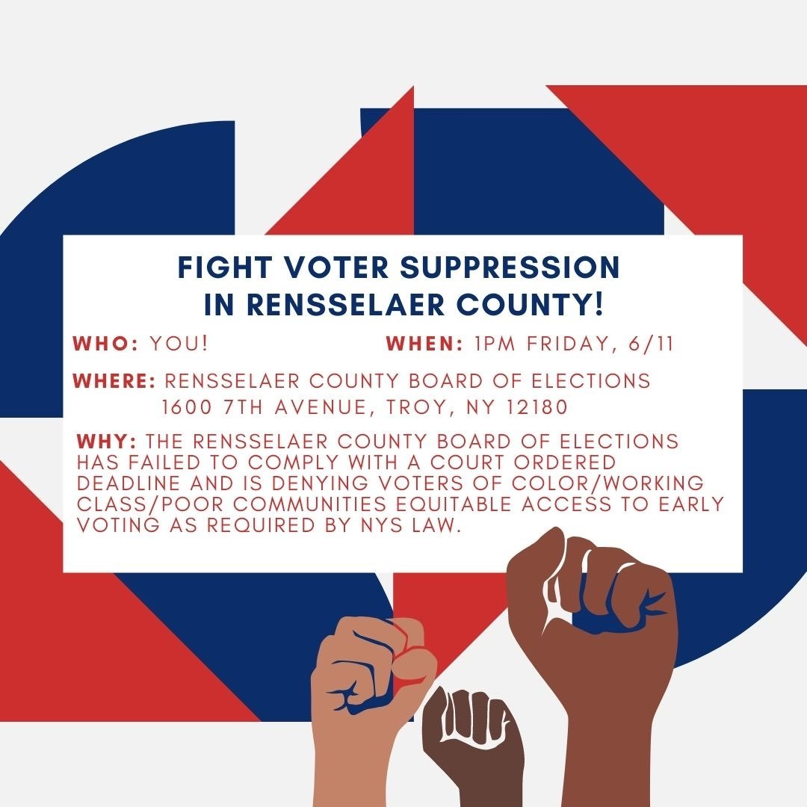
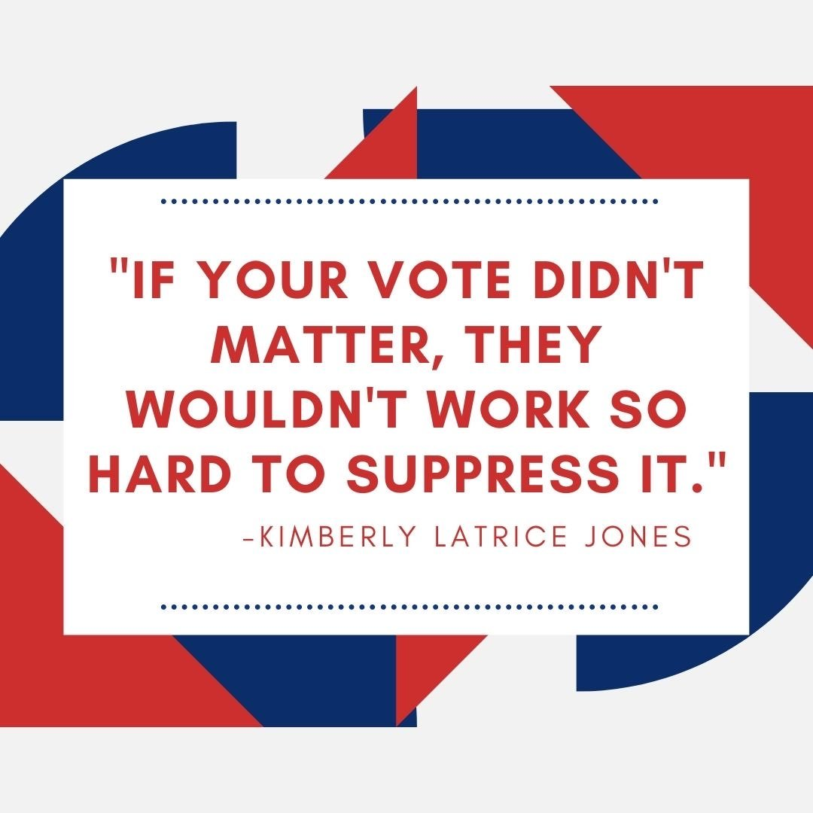

For Immediate Release: June 11, 2021
Media Contact: Renee Powell, President of the NAACP - Troy Branch, 518-469-3572
Troy Residents are rallying together in response to the Rensselaer County Board of Elections refusal to establish an accessible voting site in downtown Troy
TROY, NY - Today, Friday June 11th, residents of Troy, NY will gather in response to the Rensselaer County Board of Elections' failure to comply with a court ordered deadline to establish equitable access to early voting as required by New York State Law.
Despite a recent lawsuit by the Attorney General of New York, the Rensselaer County Board of Elections has refused to establish an early voting site in the heart of downtown Troy. This severely limits voting access to those dependent on public transportation, those working long hours, those with children, and particularly Black and Brown members of our community.
"We are disappointed by the Appellate Court's decision today to uphold the stay filed by the Board of Elections,” said Noreen McKee, Board Member of the League of Women Voters of Rensselaer County.
“This means that no early voting will be available for the voters, particularly people of color and low-income residents, living in the heart of downtown Troy for the primary election. Despite our disappointment we are hopeful and optimistic that after the next hearing on June 23rd we will have an early voting site in Troy for the general election in November."
WHO: Troy Residents
WHEN: Friday, June 11th at 1:00pm
WHERE: Rensselaer County Board Of Elections - 1600 7th Avenue, Troy, NY 12180

